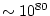
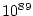
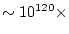
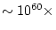

Course description: The AST 322 students will be taught the highlights of modern Lambda-CDM (Cold Dark Matter) cosmology, starting with the basics of Special and General Relativity. The second part of the course will focus more on the main observations that have led to modern Lambda-CDM cosmology. The course will be general enough to be of interest and use to students in astrophysics, aerospace and mechanical engineering, mathematics and computer science, physics, space exploration, and related fields.
Learning outcomes: Upon successful completion of this course students will be able to derive and solve the Friedmann equations for relativistically expanding universes, and be able to digest modern observational papers on Lambda-CDM cosmology, including writing a meaningful term project on a topic of their choice in this field. This will prepare them for research in astrophysics and cosmology, as well applying the basic laws of physics and relativity to real-world situations.
Prerequisites: Basic physics and math at the 200 level. For the term project due Tu April 24-27, 2025, you may need some basic plotting skills (e.g., MATLAB, Python, or any other common plotting package). For a few homework questions, you will need to know how to solve a simple differential equation --- if you have not already covered this in a previous course, the TAs will setup a tutorial session to help you do this. I will try to limit the math on GR in the first part of the course (Jan-Mar), or we'll never get to the important parts on observational cosmology, galaxy formation and evolution. I designed AST 322 so that you can follow it without yet having done all the other extragalactic AST 300 or 400-level courses, although astrophysics students will need to take these in the future if you haven't already done so.
Textbooks: Modern cosmology deals with  particles and  photons in a volume that is currently  that of the electron, and describes an era  longer than the Planck time. This is why no-one has a complete grasp of the subject, so there is no good modern textbook on cosmology. I spent quite some time to find textbooks on (observational) cosmology that are acceptable, and came up with the following:
WARNING: Most of modern theoretical cosmology was developed from 1910-today (with the main analytical framework in place by 1965) and most of observational cosmology from 1960-today. Hence, my most important message to you is that Cosmology is NOT a point-and-click science, so there is remarkably little about cosmology you can learn and fully understand from the WWW if you haven't first properly digested a complete textbook on cosmology. So please do NOT focus the study for this class on the Web -- you will get lost and miss the essentials. You will notice quickly that it is far more important for this class to have understood a given problem, than to come up with Web-material that does little to enhance your understanding of the problem. The only time that Web-use is essential or appropriate is when you prepare for the term project and retrieve modern papers on the subject.
(1) ``Introduction to Cosmology, 2nd Edition'', by Barbara Ryden [hereafter abbreviated as Ry], 2017, Cambridge University Press (UK), York), ISBN: 978-1-107-15483-4, hardback, costs about $ 44-58 to buy, or $ 23-43 to rent (the price range indicates used-new; NOTE: The ASU Bookstore now stores books alphabetically by author's last name, so find Ryden's book in the R-section, not the AST section!). This book is mandatory to buy for this class, and we will follow it closely. Do NOT buy the 1st edition from 2003, as it is no longer up-to-date. Ryden's 2nd Edition is a fully updated, new book (as of late fall 2016) with an excellent up-to-date discussion of modern cosmology including the basic Friedmann-Robertson-Walker frame-work. However, it does not address all relevant aspects of observational cosmology, which is why I suggest that we may use Longair's book as complementary source of material. The important parts to fetch from Ryden's book are chapter 3-10, which provide a more modern framework of Lambda-dominated and equation-of-state cosmologies. If you take this course for a grade, you need to get and read Ryden's book:
At the ASU Bookstore: book costs $ 23--58 for Rent/Buy--Used/New, see: https://www.bkstr.com/arizonastatestore/course-materials-results?shopBy=courseRefId&courseRefId=11979&programId=2911&termId=100066852 .
E-book version of the text-book: A Kindle Edition of the textbook can be rented for about $ 30. Open new browser window for: http://www.amazon.com . Then in the Amazon search window, enter: `` Barbara Ryden Introduction to Cosmology Ebook ''.
Lecture notes and voluntary reading: Click on the Scripts button for (PDF or PPT) slides of all figures in the text book, and notes on all chapters in the textbook. You are strongly advised to make your own notes.
Other books on Cosmology that are useful, but by no means complete, nor up-to-date, nor unbiased, are listed below. These are NOT mandatory, but will used occasionally as reference during the semester. Where necessary, the TA will provide you with copies of a few of the relevant pages:
(2) ``Galaxy Formation'', by Malcolm S. Longair [hereafter abbreviated
as ML] 1998, Springer Verlag (Berlin), ISBN=3-540-63785-0, hardcover costs
about $ 90. This book is optional, and only suggested for those who intend to
become astronomy PhD graduate students some day. Longair's book is a
remarkably good book that strikes an appropriate balance between modern
theories and modern observations, without getting lost in unnecessary details.
It is about the best relatively modern book available that lays the foundations
for observational cosmology. Written by one of the most gifted observational
astronomers in the UK. Since it came out in late 1998, Longair's book mostly
discusses the classical  =0 Friedmann models, and doesn't deal with the
latest Lambda-dominated and equation-of-state cosmologies, which is why we will
mostly lean on book (1). Longair's book does cover other topics in better
detail, such as gravitational lensing. Where needed, I will use some charts from
other books in class.
=0 Friedmann models, and doesn't deal with the
latest Lambda-dominated and equation-of-state cosmologies, which is why we will
mostly lean on book (1). Longair's book does cover other topics in better
detail, such as gravitational lensing. Where needed, I will use some charts from
other books in class.
Schedule: An outline for AST 322 is given in the attached Schedule. We will follow this schedule in principle, but changes may be announced later.
Interaction: Despite the fact that this lecture and Zoom room might be intimidating, I invite you to ask questions about the material. I like to have interaction with the class, and will give plenty opportunity to ask questions. The first few minutes after class starts will be set aside for questions in particular. The 15 min immediately before class are strictly off-limits for questions, since I need this time to setup and store away the audiovisuals. Our office hours are available if you need individual help. Please feel free to raise your (Zoom) hand during class-time if you have a question, and when I call your question, please speak up loudly, so that everyone can hear it (i.e., unmute yourself in Zoom when you need to speak, but mute at all other times).
Weekly Homework (H/W): There will be a few weekly homework problems, due every Thursday at the start of class. Submit a copy of your homework as PDF file only via Canvas, and provide a printed paper copy to the TAs (after Thursday's class time). We do not accept MS doc(x) files. The TAs will have each homework set graded by the next Tuesday, and we may briefly discuss them at the start of next Tuesday's class. Hence, no late H/W will be accepted after the solutions have been discussed. Only in some cases will extensions be granted, and in such cases, the student must email the TAs at least 48 hours before the homework is due. If no extension is given, homework received after the deadline (but before solutions are discussed) will receive only half credit.
Term Project: There will also be a Term Project, which will entail writing a 10 page ApJ Letter style paper on a cosmology subject of your choice, and which will be due the week before finals week. All of this must be your own work, although you should consult the literature, and may discuss it with others. To clarify, you could do a join Term Project developing a database or code together, as long as you list your team-mates as co-authors or collaborators on your own Term Project paper and describe what everyone did. But writing your own Term Project paper must be entirely your own work. Copying from others or from (poor!) Web-sources is not allowed (see ASU rules on plagiarism below) -- we want to grade you on how well you understand the material, not how well you can copy. The rubric for the sections your 10-page term paper should contain is listed here (an Appendix is optional for supplemental materials). We are open to other suggestions as to how you want to be tested on the subject. As this is a fairly new undergraduate course under development in a rapidly evolving field, we particularly covet your feedback at the beginning of the semester, and throughout, as to what can be done better.
Honor's Project credit:Honor's Projects may be done for Honor's credit based on Ryden Figure 5.6: choose about 20-25 different (Omega_M, Omega_Lambda) values, as indicated by the asterisks in Fig. 5.6, and solve the Friedmann equation (Eq. 5.81) by numerically solving Eq. 5.83 for each of the 20-25 different cases. Plot a(t) for each universe as in Ryden Fig. 5.7 (make up to 20-25 of these plots) showing that each universe can exist as a valid solution of the the Friedmann equation. Make sure your models cover all the relevant parameter space as in Ryden Fig. 5.6-5.7. Then summarize your result in a <10 page paper including figures. All Honor's credit Email correspondence should go directly to the UG TA Jakob Perivolotis jperivol@asu.edu. They can sign the Honor's contracts on my behalf.
You may chose from the following Term Project or Honor's Project topics:
1a) Riess et al. (2011, 2016, 2018) HST Cepheid H_o papers, e.g.,: http://adsabs.harvard.edu/abs/2011ApJ...730..119R ; http://adsabs.harvard.edu/abs/2016ApJ...826...56R ; http://adsabs.harvard.edu/abs/2018arXiv180101120R ; and https://ui.adsabs.harvard.edu/abs/2021arXiv211204510R/ . A provocative recent paper on the H_o controversy and an alternative cosmology (NOT for term paper!): https://arxiv.org/abs/1911.02087
1b) Planck Collaboration Cosmology papers, e.g.,:
Planck --- 2018 Cosmological Parameters: https://arxiv.org/abs/1807.06209
Planck --- 2016 Cosmology & definitions: 2016a, A&A, 594, A13;
Planck --- 2014 Cosmological Parameters: 2014a, A&A, 571, A16;
Planck --- Foreground Maps: 2016b, A&A, 594, A10;
Planck --- CMB Maps: 2016c, A&A, 594, A09;
Planck --- Polarization Maps: 2016d, A&A, 596, A107;
--- 2016e, A&A, 594, A2; --- 2016f, A&A, 596, A108.
2a) LIGO gravitational wave papers: https://arxiv.org/abs/1602.03837 (e.g., Abbott, B. P., et al. 2016a, Physical Review Letters, 116, 061102 ; --- 2016b, PRL, 116, 241103; --- 2017a, PRL, 118, 221101; --- 2016c, ApJL, 818, L22; --- 2016d, ApJL, 832, L21; 2016e, ApJL, 833, L1);
2b) LIGO neutron star merger papers: https://arxiv.org/abs/1710.05832 (e.g., Abbott, B. P., et al. 2017b, PRL, 119, 161101 ; 2017c, ApJL, 848, L13; Chornock, R., et al. 2017, ApJL, 848, L19; Cowperthwaite, P. S., et al. 2017, ApJL, 848, L17); see also Prof. Butler's chart here ; or
3) As of April 10, 2019 -- First discovery of a Black Hole shadow: The Event Horizon Telescope Collaboration 2019, ApJL, 875, L1 and The Event Horizon Telescope Collaboration 2019, ApJL, 875, L4 . See also the April 10, 2019 press release: https://iopscience.iop.org/journal/2041-8205/page/Focus_on_EHT , and the beautiful ESA ACT black hole shadow simulation webtool . And as of 2022, also an Event Horizon image of the massive Black Hole in our Galactic Center: https://ui.adsabs.harvard.edu/abs/2022ApJ...930L..12E/abstract , or its PDF: .
4) The Massive Black Hole in the Center of our Galaxy: Physicists who unraveled mysteries of black holes win 2020 Nobel prize in Physics . See also Milky Way's black hole provides long-sought test of Einstein's General Relativity , and the papers on https://ui.adsabs.harvard.edu/abs/2008ApJ...689.1044G/abstract , or Ghez_2008_ApJ_689_1044.pdf , and https://ui.adsabs.harvard.edu/abs/2010RvMP...82.3121G/abstract , or Genzel_2010_RevModPhys_82_3121.pdf .
5) Population III Caustic Transit paper: http://arxiv.org/abs/1801.03584 (Windhorst, R. A., Timmes, F. X., Wyithe, J. S. B. et al. 2018, ApJS, 234, 41); (see also http://adsabs.harvard.edu/abs/2018ApJS..234...41W ), or just get the published PDF file here: Windhorst et al. 2018, ApJS, 234, 41 . The April 25, 2018 press releases are here: https://webbtelescope.org/articles/2018-23 and https://asunow.asu.edu/20180425-discoveries-see-first-born-stars-universe .
6) Mystery topic: To be discussed first day of classes.
Final Exam: There will not be a final exam nor a midterm.
Grading policies and percentages: Your final grade will be determined from your class attendance, the 8 H/W sets and the semester term-project. No make-up H/W sets will be given after previous H/W has been returned. Class attendance will be kept through a twice-weekly attendance sheet that you must sign before leaving the class period.
The total possible maximum score is 240 points: a maximum of 20 points for each of the 8 H/W sets for a total of 160 H/W points and 80 points for the term project, For upper division undergraduate courses, the grades are likely not on a strong curve, but closer to a straight scale, which includes A+, A, A-, B+, B, B-, C+, C, D, and E. From past experience, if you do your best on all the homework and the term project, most students will end up with A-B grades. The A+ grade reflects excellent work and active class participation.
Extra Credit Points: A maximum number of 20 total extra credit points may be obtained during the semester. Therefore, you may earn up to a maximum of 260 points in this course. 10 of these points will be dependent upon class attendance and the other 10 will be dependent upon in-class participation (answering or proposing great questions) and a few extra credit homework problems. The TAs will log this extra credit during class time. Make sure you contact the TAs right after class if extra credit for an excellent question or answer was awarded. The best thing you can do for your grade is regular class attendance and active participation in class.
AST Grades will be available on Canvas, see:
http://students.asu.edu/student-records-grades